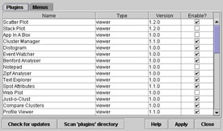
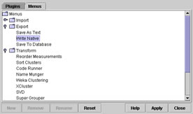

| Overview | |
Much of the functionality of maxdView is provided by 'plugin' modules that are loaded into the system as required. The Plugin Manager provides a number of useful administrative features:
The Plugin Manager has two display modes: a table listing the name, type and version of plugins and a tree representing the organisation of plugins in the main menu hierarchy. A tabbed panel is used to switch between the two different views.
|  |  |
| Plugin Information (table) | Menu Structure (tree) |
| Installing and Removing Plugins |  |
The 'Plugin' tabbed panel contains a table which has one row per plugin. The name, type and version of each plugin is displayed. Each row also contains a checkbox which controls whether the plugin is enabled. Plugins which are not enabled are not displayed in the main menus or on-line documentation.
Clicking on any of the column headings sorts the table based on that column, for example in alphetical order of name.
Changes made in this table (i.e. disabling or enabling plugins) are not activated until the "Apply" button is pressed. If it is attempted to close the Plugin Manager before the changes have been applied, then a warning message will be displayed with the option to apply or discard the changes.
| Automatic update |   |
The "Check for updates" button starts the automatic updating process (note that this button is only visible when the tabbed panel containing plugin information table is selected). A connection to the internet must be available for this process to work, if the maxdView website cannot be located then an error message will be displayed.
Once maxdView has retrieved information from the website a dialog box will be displayed which will list any plugins that are newer than the versions currently installed. Select one or more plugins from this list and press the "Install" button to begin downloading the plugins. Once the download is finished, the plugins will be registered automatically and will be available for use.
Plugins that are downloaded from the website will be installed in the per-user plugin hierarchy, which means they will only be available to the user who installed them. The per-user plugin hierarchy is seperate from the shared plugin hierarchy, which contains the set of 'standard' plugins that are shipped with maxdView. If a plugin in the per-user hierarchy has the same name as one in the shared hierarchy, then it will be used preferentially.
Some updated plugins might rely on features only available in the latest version of maxdView. If that is the case then these plugins will be identifed and it will not be possible to select them for installation. The latest version of maxdView can be installed using the automatic setup program; see the maxdView website for full details.
| Removing unwanted plugins | |
Plugins can be removed from the system by un-ticking the relevant checkbox in the information table visile in the "Plugins" tabbed panel. Once the change is confimed by pressing the "Apply" button, the entry for the plugin will be removed from the main menu and from the on-line documentation. There will still be an entry for the plugin in the information table should it be desired to re-enable it at a later date.
When a plugin is disabled,the program code (and associated files) for the plugin is not actually deleted from the plugins/ directory (this makes it easier to re-enable the plugin later). To permanently remove a plugin, the subdirectory in which it resides can be deleted by hand.
| Scanning the plugin directory | |
The "Scan plugin directory" button causes maxdView to examine all of the files in the plugins/ directory (and subdirectories) looking for Java class files which appear to be plugins. This feature is typically only used when a new plugin has been added 'by hand', i.e. not by the automatic updating system.
| Controlling the menu hierarchy | |
The "Menu" tabbed panel contains a representation of the main menu structure as a tree. Each menu is displayed as a branch of the tree. Branches can be expanded or collapsed by clicking on the small symbol to left of their names.
Entries can be dragged up and down within each menu. Entries cannot be dragged betwen menus, for example the "Read Native" plugin must always be in the "Import" menu.
Changes made in the tree are not commited until the "Apply" button is pressed. If it is attempted to close the Plugin Manager before the changes have been applied, then a warning message will be displayed with the option to apply or discard the changes.
The "Reset" button returns the menu arrangement to the built-in default setting. Any user applied changes will be removed.